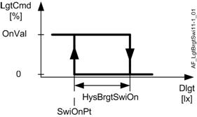

Lighting brightness switch (LgtBrgtSwi11)
Overview
The application function "Lighting brightness switch 11" (LgtBrgtSwi11) switches the lighting on and off based on daylight level.
An on/off command for the lighting output is the main output.
Features:
- Lighting command switching
- Use of a brightness sensor or a daylight sensor
- Correction function for the brightness sensor
- Collaboration with the following optional AFs: Lighting green leaf 11, impact on lighting energy efficiency (LgtGrnLf11) and the lighting manager/subordinate functionality (LgtCtlMst11 / LgtCtlSlv11)
Function
The AF calculates the on value based on the maintenance factor (MntnFac), the adaptation of illuminance (ImncAda), the lighting operation strategy (LgtOpStrgy) and the reduction factor switch on value. (RedFacSwiOn). When a presence function is available, the presence level is also considered.
- LgtOpStrgy = Energy efficiency:
On value = Actual on-value based on maintenance factor and adaptation of illuminance * RedFacSwiOn - LgtOpStrgy = Comfort optimization
On value = Actual on-value based on maintenance factor and adaptation of illuminance
The AF calculates the switch-on point based on the lighting operation strategy (LgtOpStrgy) and the reduction factor for switch-on point. (RedFacSwiOnPt)
- LgtOpStrgy = Energy efficiency:
Switch-on point = Lighting switch-on point * RedFacSwiOnPt - LgtOpStrgy = Comfort optimization:
Switch-on point = Lighting switch-on point
The present switch-on point is provided in LgtPrSwiOnPt.
Daylight value
The AF calculates the daylight value (Dlgt) as a base for the control.
- No special calculation is necessary if a daylight sensor is connected (only daylight measurement without artificial light). ▶ EnDlgtMsm = 1.
- If a brightness sensor is connected, the artificial light is subtracted to arrive at the daylight value for control (Daylight and artificial light measurement e.g. UP258). ▶ EnDlgtMsm = 0.
- The illuminance value (Imnc), i.e. the measured brightness at the desktop level, must be set correctly for the calculation to work.
- The AF uses the brightness sensor correction function (if EnBrgtCorr =1).
Daylight control
The AF switches the lighting on/off based on daylight level, smoothed by a time delay and a hysteresis.
- Lighting is switched on if it is dark (Dlgt < SwiOnPt) throughout the delay time LgtDlyOnDlgt.
- Lighting is switched off under the following conditions:
- Dlgt > (LgtSwiOnPt + HysBrgtSwiOn) all through DlyOffBrgt.
- Switching off by daylight is allowed. (EnSwiOffBrgt = 1)
The switch-off command is even ran if lighting was switched on previously at ManM3 (Prio 13) (last intervention wins).

Brightness sensor correction
The AF considers differences in sensitivity for artificial light vs. daylight measurements, the maintenance factor, the influence of the neighboring lighting and the influence of the shading if configured. See the description of AF LifeCyc11, AF ImncInfl11 and AF ShdDlgtCorr11. The AF shifts the sensor correction dynamically. The function is disabled if the daylight measurement is enabled (EnDlgtMsm = 1). If the AF is operated as a subordinate (Flag Slv = 1), brightness is calculated using the daylight value as provided by AF LgtCtlSlv11 and the calculated artificial portion.
The corrected brightness value is provided on LgtBrgtEff. When daylight measurement is enabled, daylight is provided on LgtBrgtEff.
All required parameters must be set to accurate values for the brightness sensor correction function to properly work.
Configuration
 Objects
Objects
Description | Object | Type | Default value |
|---|---|---|---|
Lighting switch-on delay brightness | LgtDlyOnBrgt | UCnfVal | 10 [s] |
Lighting switch-on point | LgtSwiOnPt | ACnfVal | 750 [lx] |
 Parameters
Parameters
Description | Parameter | Default value |
|---|---|---|
Parameters for daylight control. See also section Function. | ||
Enable switch-off brightness 0:No | EnSwiOffBrgt | 1:Yes |
Switch-on hysteresis for brightness | HysBrgtSwiOn | 100 [lx] |
Switch-off delay brightness | DlyOffBrgt | 5 [min] |
Reduction factor for switch-on value | RdcFacSwiOn | 0.8 |
Reduction factor for switch-on point | RdcFacSwiOnPt | 0.8 |
Parameters for brightness sensor calibration. | ||
Enable daylight measurement 0:No | EnDlgtMsm | 0:No |
Illuminance | Imnc | 500 [lx] |
Correction factor daylight | CorrFacDlgt | 1 |
Correction factor artificial light | CorrFacAlgt | 1 |
Interface
Interface | Description | Type | Ref. | Owned by | |
|---|---|---|---|---|---|
LgtBrgtCol | Collection of lighting brightness | ColView | ● | - | |
| LgtBrgtRs | Result of lighting brightness | ACalcVal | ● | - |
Brgt | Brightness | AI | ◉ | Room segment / Field device | |
LgtBrgtEff | Lighting effective brightness | ACalcVal | ● | - | |
LgtOpStrgy | Lighting operating strategy 1:Energy efficiency | MCalcVal | ● | - | |
LgtPrSwiOnPt | Lighting present switch-on point | ACalcVal | ● | - | |
LgtCorrDlgtCol | Collection of lighting correction factor daylight | ColView | ● | - | |
| LgtCorrDlgtRs | Result of lighting correction factor daylight | ACalcVal | ● | - |
ShdCorrDlgt | Shading correction factor daylight | ACalcVal | ◉ | Shading daylight correction 11 | |
LgtImncInflCol | Collection of lighting influence on illuminance | ColView | ● | - | |
| LgtImncInflRs | Result of lighting influence on illuminance | ACalcVal | ● | - |
LgtImncInflFnt | Lighting influence on illuminance, front | ACalcVal | ◉ | Lighting influence on illuminance 11 | |
LgtImncInflRer | Lighting influence on illuminance, rear | ACalcVal | ◉ | Lighting influence on illuminance 11 | |
LgtDlyOnBrgt | Lighting switch-on delay brightness | UCnfVal | ● | - | |
LgtSwiOnPt | Lighting switch-on point | ACnfVal | ● | - | |
Engineering and commissioning
The brightness switching function is activated after start-up (flag SttUpFns = 1).
Enable functionality in other AFs
The flags EnAutoCtl and LgtCtlAvl enable functionality in other AFs. They are normally not changed. However, it may be necessary for special functionality. Consider the influence the flags have in the entire room segment before changing.
Daylight measurement (EnDlgtMsm = 1)
Ensure that artificial light at the controlled lighting output does not influence the daylight sensor, otherwise control does not work properly and lighting may toggle on and off.
Configure the UP258 brightness sensor
For UP258 brightness sensor settings (properties of the UP258 > functions > channel 2), ensure that the min repetition time (default 10 s) is less than the update interval UpdIvl for constant lighting control. The min repetition time can be increased if the PL-Link load is too high, but then also UpdIvl has to be increased and lighting control slows down.
Do not change the settings COV lux (default 5 lx) and COV (default 1 %). Exception: COV lux can be decreased if a high correction factor is required (i.e. higher than 10), causing problems for constant lighting control sensitivity (sensor only detects a brightness change of: COV lux * Correction factor).
Calibrate the daylight sensor
Calibration is only required if the brightness sensor correction function is disabled. (EnDlgtMsm = 1)
Otherwise set the BA object's correction factor property for the analog input to 1.
Consider the measurement range of the internal light sensor. (e.g. UP258 20…1000 lx)
Proceed as follows:
- Calibrate under normal lighting conditions in the room. In other words, open blinds, but ensure that brightness in the room is still below the brightness setpoint.
- Place a lux-meter on the table where the brightness setpoint takes effect.
- Command lighting to a constant value to achieve the brightness setpoint together with incoming daylight.
- Calculate the quotient of the brightness on the table (as measured by the lux-meter) and the brightness measured by the brightness sensor on the ceiling (BrgtTable / BrgtSensor).
- Enter this value in the correction factor property for analog input BA object "Brgt".
Configure brightness sensor correction function
Only configure if the brightness sensor correction function is enabled. (EnDlgtMsm = 0). Otherwise, the parameters have no influence.
Calibration is required because the sensor is mounted on the ceiling and brightness must be controlled for the table/desk level.
A calibrated lux-meter is required to achieve solid results for configuration.
Consider the measurement range of the internal light sensor. (e.g. UP258 20…1000 lx)
Proceed as follows:
- Set the BA object's correction factor property for the analog input "Brgt" to 1.
- Measure first in a dark room, preferably without daylight.
- Measure the illuminance of the lamp at 100% output with a lux-meter on the table.
- Enter this value under parameter Inmc.
- Calculate CorrFacAlgt = Inmc / Brgt (value measured by the brightness sensor)
- Enter the value under parameter CorrFacAlgt.
- Now measure under normal daylight conditions in the room. In other words, lighting is switched off. Room brightness should be approximately 500 lx.
- Calculate CorrFacDlgt = brightness as measured with lux-meter / Brgt (value measured by the brightness sensor)
- Enter the value under parameter CorrFacDlgt.
- Make sure that AF ShdDlgtCorr11 is configured; two measurements are necessary for the correction factors daylight! See the description of AF ShdDlgtCorr11.
- Insert the parameters in AF ShdDlgtCorr11.
Typical values for Siemens UP258:
CorrFacAlgt = 8 (Artificial light is 8 times brighter than indicated by the sensor)
CorrFacDlgt = 2.5 (Daylight is 2.5 times brighter than indicated by the sensor)
CorrFacRdcDlgt = 1.2 (Daylight is 1.2 times brighter than indicated by the sensor)
Influence of the neighboring lighting groups
The lighting influence on illuminance front/rear of the neighbors have to be assigned for correct operation of the AF. See AF LgtImncInfl11.
Lighting correction daylight
The shading correction factor daylight has to be assigned for correct operation of the AF. If no valid value is available, the “internal” correction factor daylight of the AF LgtConstCtl11 (CorrFacDlgt) is active.
Sensor failure
The daylight value switches to 0 lx for a defective sensor and lighting switches on.